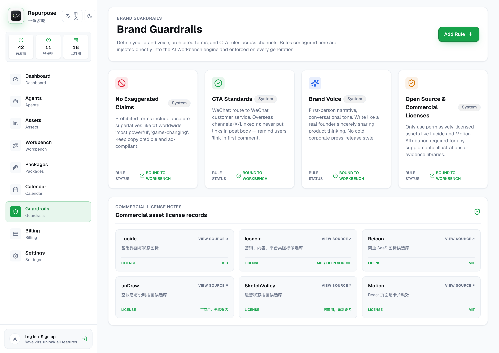
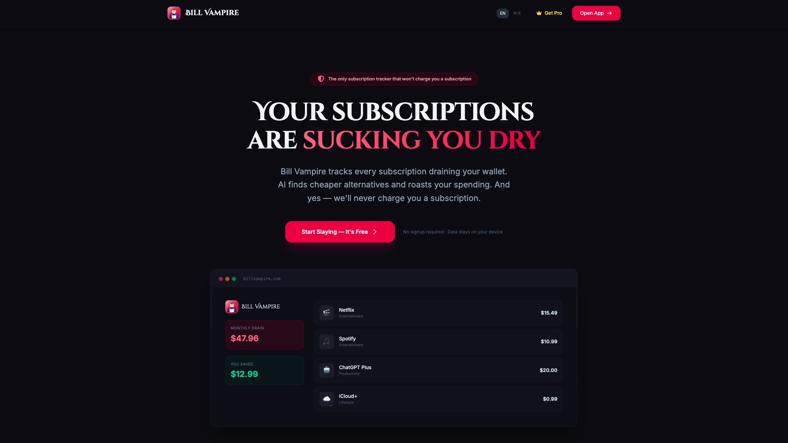

While building Finfold, I did something I wouldn't have dared attempt before. One afternoon, and the entire first version of the interface was drawn. Sidebar, cards, empty states, button copy: the AI did it all in one pass, and it all looked the part. A few years ago, that same set of screens would have cost me a week.
Then I hit "generate," and the model handed back half a dataset with a broken structure. The interface was still the same screenshot-beautiful interface, but the user had no way to tell which cards to trust, which one had failed, and whether that meant redoing one card or tearing the whole batch down and starting over.
That was the moment I lost all interest in the question of whether AI will replace designers. It points in the wrong direction. When "drawing the page" gets cheaper by the day, what exactly am I going to live on going forward? That's the question worth chewing on every day.
Pages will keep getting cheaper, and nothing can stop that. But what a designer sells has always lived outside the page: knowing which problem to solve, having the stomach to cut what doesn't fit, and being able to prove the call didn't hurt the user. AI can't carry that work away, and it has no interest in carrying it.
AI agent UX has to make the work legible
Once an agent enters a real workflow, the user has to see when it started, where it is right now, and which outputs have evidence behind them. If one step fails, the completed results can't vanish with it, and the user still needs a way to take over.
In Finfold, I split every channel into its own state, kept the successful results, and let the user retry only the failed step. Signals and UnifyUX supply the other two lessons: complex relationships need to be traceable, and the promises a team makes to its users have to land in shared rules. The rest of this essay follows those real decisions.
Signals moved the metric from pages onto tasks, and two hours down to forty minutes
What rises in price once "drawing it" depreciates? The answer sits inside the Signals project. Scientists need to trace a path from an experiment record back to the recommended material. What made the old flow unbearable? Information was scattered across several objects and pages, and the user had to stitch the lineage together by hand, one hop at a time. So this time we didn't write the goal as "rebuild a cleaner experiment list." That's a metric designers set for each other; users couldn't care less. We pinned it to one concrete task: can the user get from an experiment result to the source material, faster.


In usability testing, the same tracing task dropped from about two hours to forty minutes, roughly 66% saved. Let me nail one sentence to that number first. It is the result of one specific test task. It does not mean "design lifted the business by 66%," and it is not the average efficiency of every user in production. But stating the measurement this tightly is exactly what shows what design did this round. It compressed "scientist hunts for material" from a two-hour grind into a motion you finish without thinking.
Decision 01 · Move the metric off "pages" and onto "tasks"
- The easy version to report
- Count how many pages shipped this round, or how high the component reuse rate is. The numbers look great, but nobody is actually moved.
- The question that matters
- Can the scientist complete the trace? On which stretch of the relationship does he actually get lost?
- The design call
- Re-comb the information around materials, experiments, and lineage. Making the table look nice is a quick fix; what was hard to chew this round was the relationships between the pieces of information.
- The boundary
- The result comes from that one task test only. Don't dump every later business change onto design's tab.
AI is great at manufacturing "success screenshots." But products live in the failures.
The easiest deliverable to hand in for a generative product is a "success screenshot." Type one sentence, get a beautiful result, capture it, send it out, done. But a real product lives inside timeouts, format drift, sources that contradict each other, quota running short, and users changing their minds. Early in Finfold I made one of those classic stupid mistakes. Whenever the model errored, I had the system quietly stuff a template in to fill the result, so the Demo looked like it never broke stride.
Beautiful, no question. But the beauty was faked.
Later I deleted the whole fallback. Every channel now shows its own state: preparing, generating, checking, failed, retrying. Successful content stays; failed content explains why. That decision made my demo less than perfect for the first time, and made the product trustworthy for the first time.

No prompt can make this call for the team, deciding where accountability lands. Engineering can tell me which errors are catchable; product can define the cost of a retry; what design does is translate those constraints into states the user can read. What gets handed over in the end is a set of rules for "something broke, and the person can still keep working." Stack a pile of error pages together, and you still can't assemble that rule set.
Daring to let the system say "I don't know" is worth more than a fluent answer for everything
AI output comes with a built-in fluency. The smoother the sentence, the more easily the user files it away as fact. So a Guardrail that only stares at tone is far from enough. It also has to keep three things cleanly separated: the facts already provided, the model's inferences, and the content that still needs a human to confirm. For things like pricing, performance, or customer stories, if no source backs the claim, the interface doesn't get to slap a green checkmark on it and manufacture the feeling that the matter is settled.

What the designer is doing here, at depth, is epistemic work. What evidence did the user see, and how much certainty rises in their mind? A source link, a warning color, an editable field, plus an "unverified" tag hung on it, each quietly changes how much more they're willing to believe the result. Holding the design rights to that certainty is worth far more than writing a prettier sentence.
Visual didn't die. It got demoted from "the answer" to "the entry ticket."
Let me say one thing straight first: I hate hearing people use "strategy" to step on visual. On a complex B2B product, once the hierarchy tangles or the density runs out of control, no process, however correct, will make it fast. The value of UnifyUX is exactly this: turning color, type, components, and usage into one shared language the whole team can speak, so that several products stop reinventing their basic interactions every time.

AI will keep pushing the cost of "building basic pages" down to the floor. The design system's role moves forward with it, from "handing people components to copy" to setting the rules for people and models at the same time. Naming, states, content rules, accessibility notes will become worth far more than one polished component-overview shot. The entry ticket called visual, everyone will be able to buy it someday. The person who stands above the ticket and sets the rules clearly is the one that can't be taken away.
The most expensive judgment is usually hiding in "why would the user pay."
A product can be usable to the point of being beyond complaint and still fail to survive. When Finfold reached the pricing page, it backed me into a corner and forced one most fundamental question: is the user paying for "how many items it can generate," or paying for "fewer errors, a brand that always tastes the same, and a publishing cadence under control"? Chase the former and you slide into a token-resale game, where whoever's model is cheapest wins. The latter is what needs a whole real workflow holding it up from behind.
Bill Vampire knocked me over the head with this one too. A product that wants to charge money can't have a landing page that only aims to look cool. It has to speak plainly to the user about authorization, data boundaries, evidence of value, and what payment buys. A designer who insists on waiting for the requirements doc to be complete before drawing the page has essentially missed the most critical value definition. By the time the screens are done, the business logic has already been settled by somebody else.

These are the five questions I run every one of my projects through
Take a project, strip out the polished mockups. If I can still explain the five things below, then the project wasn't done for nothing.
- Task. Which step was the user originally stuck on, the one that ate the most time, bred the most mistakes, drained them the fastest?
- Trade-off. Which usable options were on the table at the time, and why did I cut down the other two?
- System. Which roles, which states, which downstream steps did this decision pull on?
- Evidence. Which results were actually measured, and which are just my judgment?
- Accountability. When something really goes wrong, how does the product explain itself, how does it let the person recover, and how does it hand control back to the user?
AI can help me produce options, find edges, patch code, rewrite copy; I'm glad to use all of it. The faster it gets, the more of the time it saves I have to pour into these five questions. Otherwise I've merely switched to a sharper knife for slicing a pile of pages nobody wants.
Upgrade a single screen into a piece of product evidence
- Before the screenshot, write one sentence saying what task the user is trying to finish at this moment
- Mark one failure state; don't show only the best-looking happy-path frame
- Write down which option you gave up, and what giving it up cost
- Label the result with what was measured, the sample size, or an honest "not yet verified."
- Say clearly which team rule this screen changed, and don't stop at the visual
- Signals case study: tracing tasks, recommended materials, and lineage design
- Finfold case study: workbench, agent states, Guardrail, and billing
- UnifyUX case study: design system and component language